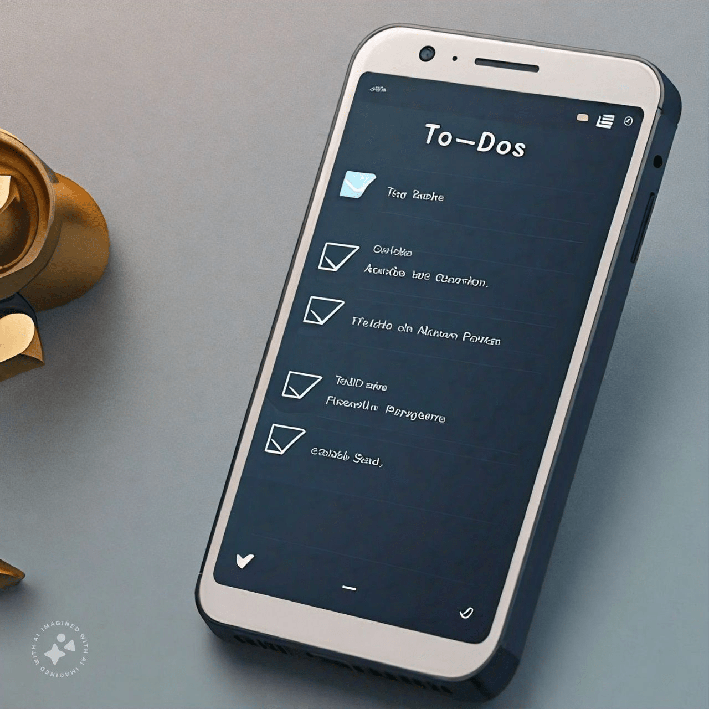

An efficient app to organize tasks, track progress, and increase productivity.
Role: Developer
Description: Created a task management application to help users keep track of their daily tasks and goals. The app features task creation, editing, and deletion, as well as categorization and due dates. Included user authentication and data persistence using a backend server.
Technologies: HTML, CSS, JavaScript, Node.js, Express.js, MongoDB, Bootstrap
Problem: Managing tasks across multiple platforms and devices can become chaotic and unorganized.
My Approach: I focused on creating a streamlined, cross-platform application:
Final Result: The app significantly improved task management efficiency and was well-received for its seamless synchronization and user-friendly interface.
"This To-Do App has revolutionized the way I manage my tasks. It’s simple, reliable, and incredibly efficient!" – App User